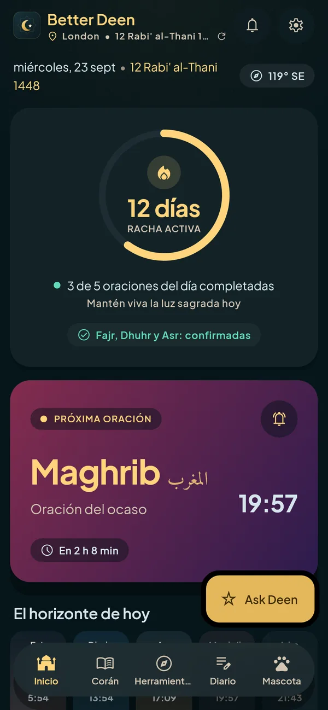
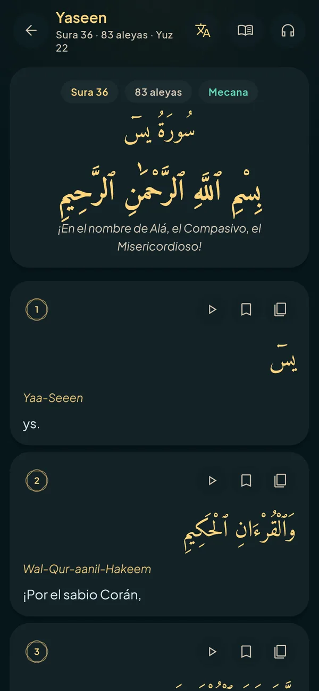
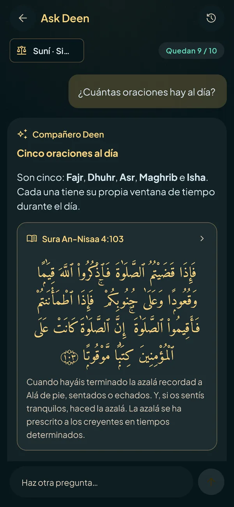
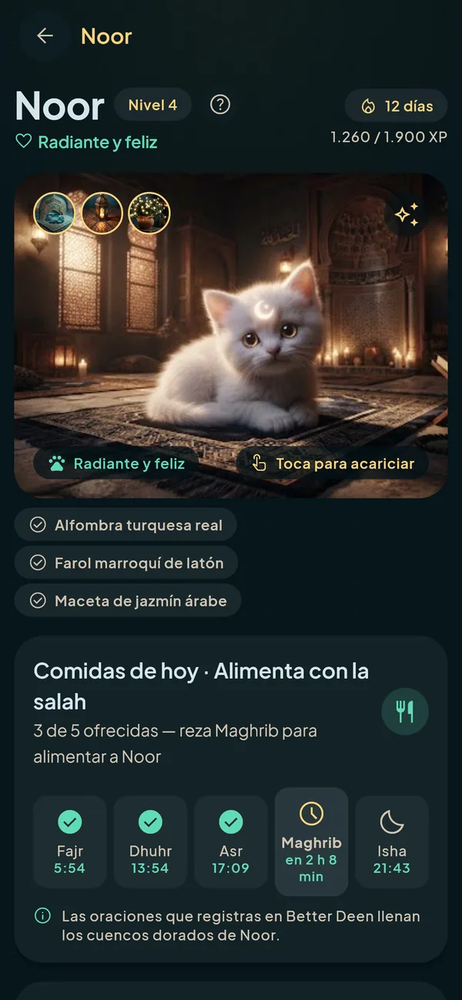
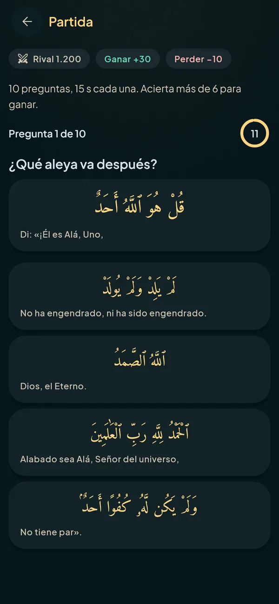
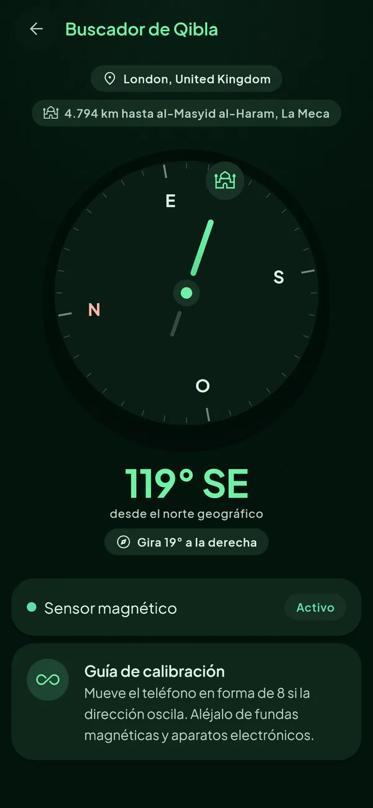

Reza a su hora, siempre
Horarios calculados en tu móvil con el método y el madhab que elijas, suní o chií. Adhan completo con la voz que prefieras, avisos antes de cada oración, rachas y widgets en la pantalla de inicio.
Para iPhone y Android
Horarios de oración y adhan, el Corán entero, un asistente de conocimiento islámico y una compañera que crece con cada salah. Tranquila, privada y sin anuncios.
Android ya · Google Play muy pronto
iPhone: muy pronto en la App Store


Elige tu idioma, método de cálculo y madhab. Nunca damos uno por defecto.
Adhan, avisos y widgets a su hora. Registra cada oración y mira crecer a Noor.
Lee y escucha el Corán, pregunta a Deen, aprende a rezar y usa cada herramienta.

Pregunta sobre tu fe y tu vida diaria como musulmán y recibe primero una respuesta clara y después el detalle. Sigue la escuela que elijas, cita el Corán y los hadices en los que se apoya y dice cuándo no está seguro.
Horarios calculados en tu móvil con el método y el madhab que elijas, suní o chií. Adhan completo con la voz que prefieras, avisos antes de cada oración, rachas y widgets en la pantalla de inicio.
Texto Uthmani con traducción y transliteración, un mushaf página a página y recitaciones de cientos de recitadores, con descargas sin conexión y un reproductor que sigue sonando en segundo plano.

Tu compañero se alimenta con las oraciones que registras, sube de nivel con tu racha y desbloquea tesoros. Una razón amable para volver cinco veces al día.

¿De qué sura es? ¿Qué aleya va después? Diez preguntas cronometradas sobre el texto literal, un ranking mundial y temporadas. Al acabar, cada aleya se abre en el lector.

Brújula de la Qibla, tasbih, diario, calendario islámico y ayuno, aprende a rezar paso a paso, horarios en un avión y el Enfoque en la salah para soltar el móvil cuando toca.
Toca el ? de cualquier herramienta dentro de la app para ver cómo funciona.
Palabras reales de usuarios reales.
Aún no hay reseñas. La tuya puede ser la primera.
Cuenta a otros cómo te ayuda Better Deen. Leemos todas las reseñas y publicamos las que se pueden compartir.
Hemos recibido tu reseña. La leeremos antes de que aparezca en la web.
Empieza con 7 días gratis. Si cancelas en tu cuenta de la tienda antes de que acaben, no pagas nada.
Precios en dólares estadounidenses; la tienda te muestra el precio en tu moneda.
Ningún musulmán debería quedarse sin ella por dinero. Si de verdad no puedes pagar, prométeselo a Allah en la app y úsala entera gratis durante un año. No se te pide nada más.
El que elijas: Liga Mundial Musulmana, Umm al-Qura, ISNA, Egipto, Karachi, Ja'fari, Teherán y más, con el madhab del Asr y un ajuste manual de cada oración.
Tienes 7 días de prueba gratuita y después cuesta 2,99 $ al mes o 29,99 $ al año. Si de verdad no puedes pagarla, puedes jurarlo por Allah en la app y usar todo gratis durante un año.
No. Da conocimiento general con sus fuentes para que aprendas y lo compruebes. Para lo personal y los temas delicados, consulta a un sabio cualificado.
Sí. Los horarios, la Qibla, el adhan, el texto del Corán, el tasbih y tu diario no necesitan conexión. Ask Deen, escuchar recitaciones y la Arena sí.
Inglés, español, árabe y neerlandés, con el árabe completamente de derecha a izquierda.
Sí, en los horarios de oración (con los métodos Ja'fari y Teherán) y en la escuela que sigue Ask Deen. La biblioteca de hadices tiene por ahora solo colecciones suníes.
Se envían a un proveedor de IA para responderlas, sin tu nombre ni datos de cuenta, y se guardan en tu historial en tu propio móvil. Los detalles están en la política de privacidad.
La suscripción paga la app, así que nunca tiene que vender tu atención ni tus datos.
En tu cuenta de Google Play o de la App Store, en Suscripciones. La app tiene un acceso directo en Ajustes → Suscripción.
Llegará muy pronto a Google Play y a la App Store. Mientras tanto, en Android puedes instalarla desde la página de descarga.
Descarga Better Deen y que la próxima oración sea a su hora.
Descargar para AndroidiPhone: muy pronto en la App Store